Demo platformă casino Jackpot
Aplicația e construită și publicată. Documentul ăsta arată din ce s-a plecat, ce s-a decis pe parcurs și cum arată rezultatul pus lângă design, secțiune cu secțiune.
Secțiunile 01–12 sunt istoricul: ce s-a măsurat în fișierul Figma înainte de a scrie cod, ce decizii s-au luat și ce a ieșit la verificările dinaintea construcției. Toate întrebările de acolo au primit deja răspuns; sunt păstrate ca urmă scrisă. Secțiunea 13 e comparația propriu-zisă: paisprezece comparații Figma / implementare.
Obiectivul și starea de acum
Ce vrem, ce există, ce livrăm. Fără presupuneri — starea repo-ului a fost citită direct de pe disc.
Director gol
D:\jp-platform conține doar .git (zero commit-uri) și
.claude\settings.json. Nu există cod de reutilizat și nici de migrat.
Tot ce urmează se scrie de la zero.
Fișierul Figma
O singură pagină, Platform. Secțiunea 1 ține desktop-ul și stările, secțiunea 2 ține mobile-ul. Plus două UI Kit-uri, Desktop și Mobile, care documentează culori, tipografie și stările butoanelor.
Aplicație rulabilă
npm run dev pornește platforma completă: desktop, mobile,
search funcțional, comutare prelogin / postlogin / VIP, panourile Balance
și Personal information. Date mock locale, fără backend.
Ce am verificat efectiv
Punct verde înseamnă măsurat: am rulat interogarea și am citit rezultatul. Punct chihlimbariu înseamnă că încă nu știu și nu ghicesc.
Figma nu are design tokens
Interogarea variabilelor pe desktop-main întoarce o singură valoare,
BG/Quaternary: #0D1420. Pe UI Kit — Desktop întoarce gol.
Toate culorile sunt fill-uri hardcodate în layere. Pe românește: dacă designerul schimbă
mâine fundalul cardurilor, schimbarea nu se propagă nicăieri singură — trebuie citită din nou.
În schimb, UI Kit-ul e scris ca o documentație
Frame-ul Colors are cinci grupe, iar fiecare swatch e deja numit semantic: Page Background, Card Background, Blue Primary, Gold Nav Active. Numele acestea devin direct numele token-ilor din Tailwind, deci maparea nu e o invenție a noastră, e transcriere. Paleta completă e mai jos, la secțiunea 03.
Fonturile sunt toate open-source
Inter, Roboto Flex, Bricolage Grotesque. Toate trei sunt Google Fonts,
deci se încarcă prin next/font/google fără licență de cumpărat și fără fișiere de găzduit.
Cele două ecrane „mob main" nu sunt un duplicat
Am comparat linie cu linie cele două subarbori. Din 894 de linii de structură, diferă exact
headerul: 1:6978 are Header (Pre-login) cu două butoane Sign In,
iar 1:5720 are Header (POST-login) cu butonul verde de sold și un plus.
Restul e identic. Deci mobile-ul nu are două pagini, are o pagină cu două headere — exact ca desktop-ul,
și munca pentru mobil nu se dublează.
Design-ul nu are imagini distincte pe joc
PopularGames și CrashGames conțin ambele aceleași șase carduri „Gates of Olympus 1000 / Pragmatic Play". Rândul de provideri are cinci logo-uri unice repetate ca să umple șaisprezece poziții. Concret: dacă descarc pur și simplu ce e în Figma, obțin o singură imagine de joc, nu șaizeci — și un demo în care toate jocurile arată la fel se citește ca defect, nu ca design.
Nu știu încă ce formă are exportul de assets
Nu am rulat încă descărcarea. Nu știu dacă logo-urile providerilor ies SVG sau PNG, la ce rezoluție, și dacă numele de fișiere se ciocnesc între ele. De asta faza de assets e secvențială și separată: dacă iese prost, se reia ieftin, fără să blocheze pe nimeni.
Sistemul de design, extras din UI Kit
Culorile de mai jos sunt citite din frame-ul Colors al UI Kit-ului Desktop, nu alese de mine.
Pagina pe care o citești acum e pictată cu exact aceste valori — e prima verificare că paleta ține.
Ele devin tailwind.config.ts, singura sursă de adevăr pentru culori din proiect.
Un nume dat unei culori, folosit în locul valorii
Un token de design e pur și simplu un nume. În loc să scrii în cod culoarea
#151624, scrii bg-card. Numele înseamnă „fundalul cardurilor", iar undeva,
într-un singur fișier, e notat o dată că bg-card înseamnă #151624.
Exemplul concret din proiectul ăsta. Cardul jocului Gates of Olympus 1000 din rândul Popular stă pe fundalul #151624. Exact aceeași culoare o are cardul din Crash Games, cardul din Must Play Slots, panoul Balance care se deschide din header, meniul jackpot de pe mobil și fiecare bloc din footer. Sunt câteva zeci de locuri.
Fără token
Culoarea e scrisă de mână în fiecare componentă. Designerul zice mâine „cardurile sunt prea închise, fă-le #1A1B2B". Trebuie găsite toate aparițiile și schimbate una câte una. Câteva vor fi ratate — și vor fi ratate exact în locurile pe care nimeni nu le deschide des, adică starea search fără rezultate sau meniul VIP.
Cu token
Toate acele locuri scriu bg-card. Schimbarea e o linie, în
tailwind.config.ts. Nu există „am uitat unul", pentru că nu există copii —
există o definiție și zeci de referințe la ea.
Unde intervine riscul R-2. În mod normal numele astea stau chiar în Figma,
ca variabile, iar codul le poate citi automat. Aici nu stau — am verificat,
fișierul are o singură variabilă. Ce avem în schimb e UI Kit-ul, unde designerul a scris numele
ca text sub fiecare pătrat de culoare: Page Background, Card Background,
Gold Nav Active. Deci numele există și sunt bune, dar legătura dintre Figma și cod
e un document pe care îl scriem noi (docs/tokens.md), nu ceva care se sincronizează singur.
Dacă documentul ăla iese neglijent, agenții care construiesc componentele încep să scrie iar
culori de mână — și ne întoarcem exact la coloana din stânga.
Fonturi: Inter, Roboto Flex, Bricolage Grotesque.
Singura valoare care apare ca variabilă Figma, BG/Quaternary #0D1420, nu se regăsește
în niciuna dintre cele cinci grupe — o tratăm ca excepție punctuală, nu ca token.
Ce arată design-ul
Trei capturi luate direct din Figma. Ele sunt și dovada pentru observația despre imagini de la secțiunea 02.
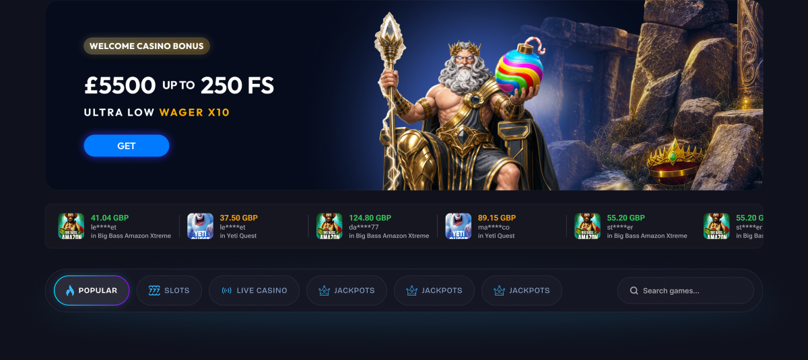

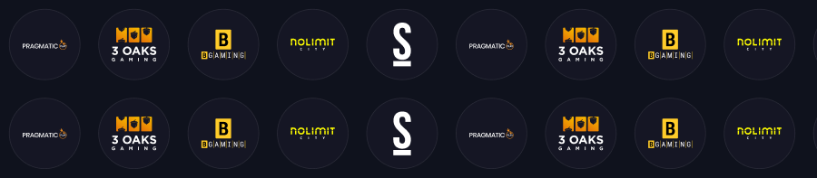
Cum ajunge design-ul în cod
O singură direcție de curgere. Fiecare cutie are un proprietar unic, și tot ce e în dreapta unei cutii doar citește din ea, niciodată nu o rescrie.
Punctul important: registrul din mijloc. Tot ce e descriere de ecran trăiește acolo ca date. De asta un ecran nou adăugat de designer nu atinge nici pagina, nici tokenii, nici componentele existente.
Decizia principală: 12 rânduri devin date, nu cod
Din cele 15 rânduri de conținut de pe desktop, 12 sunt exact același tipar: un antet cu iconiță, titlu și link „See All", urmat de o grilă de carduri. Diferă doar titlul și ce jocuri intră în grilă.
12 componente scrise de mână
Fiecare rând, propriul fișier. Când designerul cere ca titlul secțiunilor să fie cu 2px mai mare, se schimbă în douăsprezece locuri. Când adaugă un rând nou, se scrie o a treisprezecea componentă aproape identică.
// 12 fișiere aproape identice PopularGames.tsx NewGames.tsx CrashGames.tsx MustPlaySlots.tsx … încă opt …
O componentă + un registru
O singură ContentRow, alimentată de o listă de descrieri. Rândul nou înseamnă
patru linii de date. Schimbarea de stil se face o dată, într-un singur loc.
// src/lib/sections.ts { kind: 'games', id: 'crash', title: 'Crash Games', grids: 1, filter: { tag: 'crash' }, figmaNodeId: '1:3230' }
Câmpul figmaNodeId nu e decor. El e ce transformă verificarea vizuală dintr-o corvoadă
de douăzeci de comparații manuale într-o buclă automată: pentru fiecare intrare din registru,
ia captura din Figma, ia captura din browser, pune-le alături.
Cele trei bannere mari
Tournament, Lottery și Wheel au toate 1280×260 și aceeași anatomie. O componentă, trei variante.
Starea aplicației
Un singur magazin Zustand ține modul de autentificare, starea căutării și ce panou e deschis. Fără provider, deci restul paginii rămâne randat pe server.
Datele
60 de jocuri în JSON, re-feliate pe rânduri prin filtre. Eticheta „See All (206)" rămâne ca în design, fără să inventăm 206 înregistrări cu imagini rupte.
Orchestrarea: coloană secvențială, apoi evantai
Opt agenți nu pot scrie în paralel aceleași componente partajate. Soluția nu e izolarea în copii separate ale repo-ului, ci împărțirea proprietății pe fișiere: fiecare agent primește lista exactă a fișierelor pe care are voie să le creeze și lista celor pe care are voie doar să le citească. Seturile nu se intersectează, deci nu există nimic de reconciliat la final.
Decis în review: cei opt nu pornesc deodată, ci în două valuri de câte patru. Valul întâi ia Header, Hero, Rânduri și Footer — zonele care ating cele mai multe primitive. Dacă acolo iese ceva greșit în cardul de joc sau în buton, se corectează o dată, nu de opt ori.
De ce fazele 1–3 nu pot rula în paralel: tokenii și primitivele sunt vocabularul comun.
Doi agenți care citesc independent UI Kit-ul vor boteza același gri o dată bg-surface
și o dată bg-card; doi agenți care scriu cardul de joc produc două carduri de joc diferite.
Serializarea fundației e exact ce face ca evantaiul de opt să nu aibă conflicte.
Cine deține ce, în faza 4
Toți importă din tokeni, tipuri, magazin și primitive. Niciunul nu le modifică.
| Val | Agent | Zonă | Fișiere pe care le creează | Noduri Figma |
|---|---|---|---|---|
| 1 | 6 | Header | layout/Header.tsx + 3 variante | 1:2432, 1:4244 |
| 1 | 7 | Hero, ticker, bara de categorii | layout/HeroBanner · RecentWinsTicker · CategoryNavBar | 1:2433, 1:2435, 1:2500 |
| 1 | 8 | Rândurile de jocuri și provideri | sections/ContentRow · ProviderRow | 1:2592, 1:2620, 1:2649 |
| 1 | 10 | Footer | layout/Footer.tsx | 1:3666 |
| 2 | 9 | Bannerele promoționale | sections/PromoRow + variante PromoBanner | 1:3427, 1:3524, 1:3580 |
| 2 | 11 | Căutarea, toate stările | tot components/search/ | 1:4314, 1:4321, 1:4334, 1:4479, 1:4611 |
| 2 | 12 | Panourile din header | panels/BalancePanel · PersonalInfoPanel | 1:4116, 1:4153 |
| 2 | 13 | Mobile | layout/MobileNavBar · MobileShell · panels/JackpotMenu | 1:8235, 1:8751, 1:8260, 1:8503 |
Nu folosim copii izolate ale repo-ului
Ar părea alegerea sigură pentru opt agenți paraleli, dar aici e dăunătoare. Fiecare copie ar avea nevoie de propria instalare de dependențe — opt instalări de câteva sute de megaocteți, înainte ca cineva să scrie o linie. Iar fără dependențe instalate, un agent nu poate face nici măcar verificarea de tipuri, adică pierde exact controlul care justifică paralelismul. Împărțirea proprietății pe fișiere rezolvă deja coliziunile, deci izolarea ar plăti scump pentru o problemă care nu există.
Când designerul adaugă ecrane
Ai spus că vor mai veni ecrane. Arhitectura e făcută în jurul acestei ipoteze, nu adaptată la ea ulterior.
- Un rând nou de jocuri — se adaugă patru linii în registru. Zero componente noi, zero fișiere atinse. Cinci minute.
- Un ecran nou de sine stătător — o intrare în registrul de ecrane, cu nodul Figma și viewport-ul, plus o componentă compusă din primitivele care există deja.
- Verificarea se face singură — pagina internă
/dev/screensrandează automat orice intrare din registru, cu nodul Figma atașat, deci bucla de comparație o preia fără nicio modificare.
Ce face diferența: un ecran nou nu atinge niciodată configurația de culori, magazinul de stare, layout-ul aplicației sau componentele existente. Dacă vreodată trebuie atinse, înseamnă că designerul a introdus ceva cu adevărat nou — și atunci merită o discuție, nu o improvizație.
Cum dovedim că seamănă cu design-ul
Cinci porți, de la cea mai ieftină la cea mai lentă.
- Verificare de tipuri și lint, după fiecare agent. Nu scrie nimic pe disc, deci se poate rula în paralel fără risc.
- Disciplina culorilor — o regulă de lint respinge orice cod hexazecimal scris direct într-o componentă. Dacă cineva scrie
#151624în loc să folosească token-ul, pică la lint, nu la review-ul uman. - Build complet și pornirea serverului, doar în fazele secvențiale. Zero erori în consolă, zero avertismente de hidratare.
- Comparație vizuală per secțiune — pentru fiecare intrare din registru: captura din Figma, apoi browserul la 1440 sau 390 pixeli, apoi captura reală, puse alături. Devierile devin corecții în fișierele deținute de agentul zonei respective.
- Test de interacțiune — comutare prelogin → postlogin → VIP; tastat
zeupentru sugestii,xyzzypentru starea fără rezultate, golire pentru starea inițială; deschis și închis ambele panouri; toate cele trei meniuri jackpot la 390 pixeli.
Riscuri
Cinci lucruri care pot strica execuția. Primul e cel mai probabil și blochează totul, deci se verifică înainte de a porni orice agent.
| ID | Impact | Ce se poate întâmpla | Ce facem |
|---|---|---|---|
| R-1 | Blochează tot | Comanda de scaffold refuză directorul, pentru că .claude nu e pe lista ei de excepții. Un eșec în faza 0 lasă toți agenții pe loc. |
Scaffold într-un director alăturat, apoi mutarea conținutului peste .git și .claude existente. Se testează întâi. |
| R-2 | Se propagă | Fără variabile în Figma, numirea token-ilor e o judecată făcută o singură dată. Dacă tabelul de mapare iese subțire, cei opt agenți din aval încep să inventeze culori. | Tabelul docs/tokens.md e livrabil obligatoriu al fazei 1, cu cel puțin un rând pentru fiecare swatch din secțiunea 03. |
| R-3 | Necunoscut | Forma exportului de assets nu e verificată — nu știu dacă logo-urile ies vectoriale sau raster, la ce rezoluție, și dacă numele se ciocnesc. | Faza de assets e secvențială și izolată, cu un fișier de indirecție între nume și cod, ca redenumirile să nu se propage. |
| R-4 | Vizual | Sursa are o singură imagine de joc. Placeholder-ele generate pot arăta ca imagini lipsă, nu ca decizie. | Decis în review: gradiente din paleta UI Kit — auriu #F0C775 → #C6903D și portocaliu #F8B900 → #E67508 — cu titlul jocului peste. Arată ca decizie de brand, nu ca imagine lipsă. |
| R-5 | Erori fantomă | Doi agenți care rulează build simultan corup cache-ul de compilare și produc erori care nu au legătură cu codul scris. | Interdicția se scrie în promptul fiecărui agent paralel, nu doar în plan. Verificarea lor e doar typecheck. |
Ce se întâmplă înainte să înceapă construcția
Ai bifat toate cele cinci riscuri. Fiecare primește o verificare separată și un raport, înainte de faza 0. Nu pornește niciun agent până nu ai văzut rezultatele. Fiecare identificator de mai jos primește exact un verdict — tratat, amânat cu motiv, sau respins cu motiv.
| ID | Ce verific concret | Ce vezi tu |
|---|---|---|
| R-1 | Rulez comanda de scaffold într-un director de probă și verific dacă refuză din cauza .claude. Dacă refuză, testez și mutarea conținutului peste .git existent. | Ieșirea comenzii, exact cum a apărut. |
| R-2 | Scriu docs/tokens.md cu toate cele 26 de culori din secțiunea 03, fiecare cu numele din Figma și numele din Tailwind. | Tabelul complet, înainte de prima componentă. |
| R-3 | Descarc assets-urile unui singur nod — rândul de provideri — și mă uit ce a ieșit: format, rezoluție, nume de fișiere. | Lista fișierelor rezultate. |
| R-4 | Construiesc trei carduri de probă cu gradientele alese și le pun lângă cardul real din Figma. | Comparație vizuală, înainte de a le aplica pe toate. |
| R-5 | Scriu promptul complet al unui agent din faza 4, cu lista de fișiere permise și interdicția de build. | Promptul brut, ca să judeci tu dacă regula e clară. |
Deciziile luate în review
Cele trei întrebări deschise au primit răspuns. Le las aici ca urmă scrisă, cu ce înseamnă fiecare în execuție. Nu mai există întrebări deschise în acest plan.
Faza 4 merge în două valuri de câte patru
Valul întâi: Header, Hero, Rânduri, Footer — zonele care ating cele mai multe primitive.
Corecțiile la cardul de joc sau la buton se fac o dată, apoi pornește valul doi:
Bannere, Search, Panouri, Mobile. Concret: dacă GameCard are marginea greșită,
o repari într-un singur loc, nu în opt ramuri paralele care au apucat deja să construiască peste ea.
Cardurile fără imagine reală primesc gradiente din paleta UI Kit
Auriu #F0C775 → #C6903D și portocaliu #F8B900 → #E67508, cu titlul jocului peste. Culorile sunt cele din secțiunea Gradient Colors a UI Kit-ului, deci grila rămâne în brand și nu arată ca imagini care nu s-au încărcat.
Astea sunt schițate direct aici, în HTML, ca să vezi acum direcția. Variantele finale, construite în proiect și puse lângă cardul real din Figma, vin la verificarea riscului R-4, înainte de faza 0.
Pagina /dev/screens rămâne vizibilă în demo
Devine suprafața de lucru a designerului, nu doar o unealtă internă de test. Deschide o adresă și vede toate ecranele din registru, fiecare cu identificatorul nodului din Figma alături — inclusiv ecranele pe care le adaugă el pe parcurs, fără ca noi să facem ceva. Consecință practică: când adaugă un ecran nou, verificarea vizuală îl preia automat.
Verificările dinaintea fazei 0 — rezultate
Cele cinci riscuri, verificate efectiv. Fiecare are un verdict și dovada lui. Două dintre ele au ieșit altfel decât scria în plan — le-am marcat explicit.
Scaffold-ul chiar refuză directorul — și mutarea avea un defect
Am creat un director de probă cu .claude și .git înăuntru și am rulat comanda.
Refuză, exact cum bănuiam. .git trece, .claude nu:
The directory r1-probe contains files that could conflict: .claude/ Either try using a new directory name, or remove the files listed above.
Ce nu anticipasem: mutarea din directorul frate eșuează și ea, pentru că
create-next-app își creează propriul .git în scaffold,
iar peste .git-ul existent nu se poate scrie:
Move-Item : Cannot create a file when that file already exists. (C:\...\r1-scaffold\.git:DirectoryInfo) [Move-Item], IOException
Procedura corectată — ștergi întâi .git-ul scaffold-ului, apoi muți — a fost testată
și trece: directorul final conține .claude intact, .git original intact,
plus tot ce a generat Next.
Cele două UI Kit-uri se contrazic pe aceleași nume
Am citit și UI Kit-ul Mobile, nu doar pe cel Desktop. Cinci nume apar în ambele, cu valori diferite. Nu sunt greșeli — sunt decizii diferite pentru ecrane diferite. Dar înseamnă că un singur tabel de tokeni nu poate avea o singură valoare pentru fiecare nume.
| Nume în Figma | Desktop 1440px | Mobile 390px |
|---|---|---|
| Page Background | #11111A | #0F121D |
| Overlay | #000000 @ 20% | #161625 @ 80% |
| Secondary Text | #FFFFFF @ 70% | #FFFFFF @ 60% |
| Blue Tinted BG | #007AFF @ 13% | #007AFF @ 15% |
| Card Border | #FFFFFF @ 4% | #262632 |
În plus, mobile-ul aduce patru culori care nu există pe desktop — Section Background #12162B, Caption Text #8E9BB0, Emerald Green #00F299, Cyan Accent #00F0FF — și botează diferit aceeași valoare: desktop scrie Separator, mobile scrie Divider, ambele #282936.
Tabelul complet e scris: 26 de culori desktop, 22 mobile, 30 de tokeni distincți după unificare, dintre care 5 cu două valori.
Câștigă valorile din kit-ul Mobile
O singură valoare per token, cea de pe mobil, aplicată la ambele viewporturi. Decizia se aplică doar celor cinci nume aflate în conflict; tokenii care există numai în kit-ul Desktop — Gold Nav Active, Nav Inactive, Footer Heading și ceilalți — își păstrează valorile, altfel pastila activă din bara de categorii și-ar pierde auriul.
O singură excepție, adăugată după verificarea vizuală: bg-overlay
păstrează ambele valori, comutate la 768px. Aici kit-urile diferă dintr-un motiv, nu din
neatenție — pe desktop stratul stă în spatele unui panou mic din colț și lasă pagina lizibilă
la 20%, pe mobil în spatele unei foi care acoperă tot ecranul, la 80%. Cu o singură valoare,
panoul Balance de pe desktop ieșea mult mai închis decât în nodul 1:4116.
Exportul de assets nu poate fi făcut pe rânduri întregi
Am rulat descărcarea pe patru noduri diferite. Rezultatele:
- Pe rândul întreg de provideri — ies peste 20 de fișiere SVG, tăiate la 20, cu mesaj de trunchiere și fără nume. Sunt fragmente de layere, nu logo-uri: unul dintre ele e literalmente un dreptunghi negru, <path d="M59 0H0V10.2924H59V0Z" fill="black"/>, adică masca logo-ului.
- Pe un singur logo — curat: două SVG-uri, masca de 286 octeți și logo-ul real de 6233. Plus un export PNG al insignei întregi, 4,4 KB, care arată exact ca în design.
- Pe banner-ul hero — patru imagini raster, corect PNG. Dar cea mare e 4096×1360 px, 5,7 MB. Pentru un demo trebuie redimensionată, altfel prima încărcare a paginii trage singură șase megaocteți.
- Pe cardul de joc — surpriza: arta jocului există ca GIF animat 480×640, 2,7 MB, plus o variantă statică PNG 240×320, 125 KB. Design-ul are carduri animate.
Ce se schimbă în plan: faza de assets nu descarcă pe rânduri, ci nod cu nod, și își ia numele fișierelor din numele layerelor din Figma. Providerii sunt deja numiți acolo — Badge-Pragmatic, Badge-3 Oaks, Badge-BGaming, Badge-Nolimit, Badge-Spribe — deci sunt cinci provideri, nu șaisprezece.
Doar PNG static, fără animație
Arta jocurilor există în Figma ca GIF animat de 480×640 și 2,7 MB, plus o variantă statică PNG de 240×320 și 125 KB. Se folosește doar cea statică. Cu șaizeci de carduri pe pagină, varianta animată ar fi însemnat sute de megaocteți la o singură încărcare.
Placeholder-ele, lângă cardul real
Primul e cardul exportat din Figma, la dimensiunea lui reală, 203×264. Următoarele trei sunt placeholder-ele propuse, la aceeași dimensiune. Notabil: în Figma cardul nu are nod de text — titlul și numele providerului sunt coapte în imagine. Deci placeholder-ul trebuie să le deseneze el.
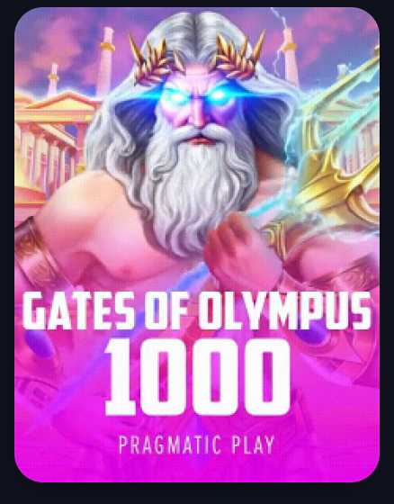
nod 1:2602
#F0C775 → #C6903D
#F8B900 → #E67508
#C6903D → #5E3C10
Toate trei folosesc exclusiv culori din secțiunea Gradient Colors a UI Kit-ului. Care gradient primește un joc se calculează din identificatorul lui, deci același joc arată la fel de fiecare dată, iar grila are variație fără să iasă din paletă.
Promptul unui agent din faza 4, în întregime
Ăsta e textul exact pe care îl primește agentul 10, cel cu footerul. Uită-te la cele două liste și la interdicția de build — asta e tot ce împiedică opt agenți să se calce reciproc.
Construiește footerul desktop din Figma, nodul 1:3666, în proiectul D:\jp-platform (Next.js 15 App Router, TypeScript, Tailwind v3). ÎNAINTE DE ORICE: încarcă resursa skill://figma/figma-design-to-code/SKILL.md și urmeaz-o. La apelul get_design_context trimite skillNames: "resource:figma-design-to-code". == POATE CREA — exclusiv aceste fișiere == src/components/layout/Footer.tsx src/components/layout/FooterLinkColumn.tsx src/components/layout/FooterBottom.tsx == POATE DOAR IMPORTA — citește, NU modifica == src/lib/types.ts tipurile FooterData src/data/footer.json conținutul footerului src/lib/assets.ts căile către logo-uri de plată și parteneri src/components/primitives/* Button, Icon, Badge tailwind.config.ts tokenii de culoare == INTERZIS == NU rula `npm run build`, `next build` sau `next dev`. Alți agenți lucrează în paralel în același director, iar două compilări simultane corup .next și produc erori care nu au legătură cu codul tău. NU scrie niciun cod hexazecimal de culoare. Folosește tokenii: bg-card, text-footer-heading, border-separator. Regula de lint respinge orice #RRGGBB din src/components/. NU modifica niciun fișier din lista "poate doar importa". Dacă ai nevoie de o schimbare acolo, scrie cererea în raportul final și oprește-te — o aplic eu între valuri. == VERIFICARE PROPRIE == npx tsc --noEmit npx eslint src/components/layout/Footer.tsx (și celelalte două) == RAPORT FINAL == Fișierele create, cu o linie despre ce conține fiecare. Orice abatere de la design pe care nu ai putut-o reproduce, cu motivul. Orice cerere de schimbare în fișierele înghețate.
Figma lângă implementare
Stânga e captura din Figma, dreapta e captura reală din browser, la aceeași lățime. Adnotează direct pe oricare imagine — feedback-ul ajunge la mine cu secțiunea atașată. Capturile din dreapta sunt luate cu mișcarea redusă, deci banda de provideri e înghețată; în browser ea se rotește.
Header desktop
nod 1:2432Singura diferență e simbolul monedei: design-ul scrie $ 5,500.00, noi scriem £5,500.00. E decizia ta de la început — moneda rămâne GBP. Sigla e vectorul exportat din nodul 1:4250, nu text scris cu font.
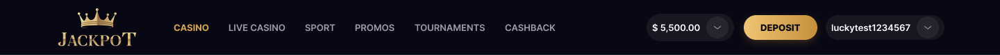

Hero, ticker și bara de categorii — desktop
nod 1:2433Captura din dreapta include și header-ul, pentru că e luată din pagina reală. În ticker, primele trei câștiguri au miniatura adevărată; restul au gradient, pentru că design-ul conține doar trei imagini de joc distincte.


Rândul Popular — desktop
nod 1:2592Antetul, linia punctată, pastila See All (206) și grila de șase carduri se potrivesc. Diferența de conținut e cea așteptată: în Figma toate cele șase carduri sunt aceeași imagine, la noi trei sunt reale și trei sunt gradientele din UI Kit, cu titlul și providerul scrise de noi — pentru că în design textul e copt în imagine, cardul nu are nod de text.
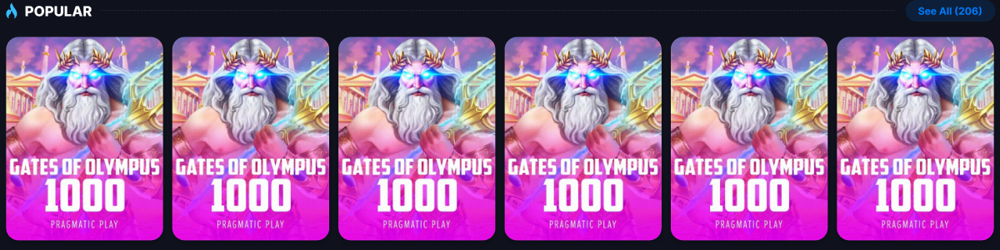

Leading Providers
nod 1:2657
Aici verificarea vizuală și-a plătit costul. Butonul de căutare din antet se randa ca o lupă
uriașă ieșită din pagină. Cauza: fișierul search-btn.svg nu era un buton, ci
un SVG de 20×20 care conținea tot canvas-ul Figma — un dreptunghi de fundal și trasee cu
coordonate de la −2254 la 8005. Înlocuit cu vectorul corect al nodului 1:2655.
Diferența rămasă e voită: providerii fără logo primesc inițiale, unde design-ul repetă
aceleași cinci logo-uri de paisprezece ori.


Current Tournaments
nod 1:3427Eyebrow, titlu, subtitlu, ambele pastile, numărătoarea inversă și butonul auriu. Numărătoarea e derivată din data de final din date, nu scrisă de mână, deci chiar curge. Premiul scrie GBP unde Figma scrie RON — în același design, celelalte două bannere scriu deja GBP.


Weekly Lottery
nod 1:3524
Conținutul se potrivea de la început — același titlu, același subtitlu, aceleași două
pastile, aceeași numărătoare. Nu se potriveau patru distanțe și o culoare. Măsurate pe
nodul 1:3532: între titlu și subtitlu 12, nu 6; între subtitlu și pastile 12, nu 16;
între pastile 8, nu 12; între cronometru și buton 16, nu 20. Iar amberul din spatele
pastilelor e un al doilea amber — Figma pictează nodul 1:3538 cu
rgba(242,193,70,.1), adică #F2C146,
nu #F59E0B, culoarea pe care o are chiar textul de deasupra.
docs/tokens.md notase valoarea greșit; acum --amber-tint o spune
corect, iar asta e singura schimbare de pixeli pe care a primit-o și bannerul de turneu.
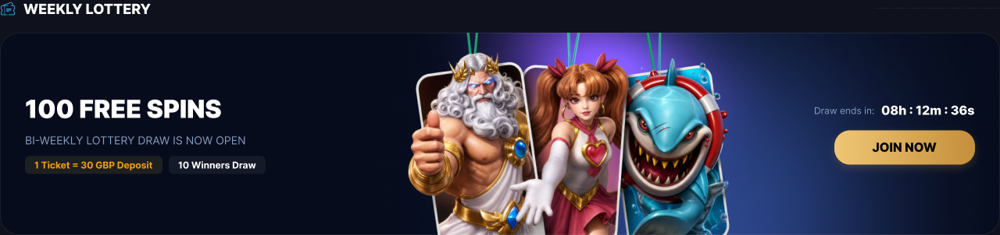
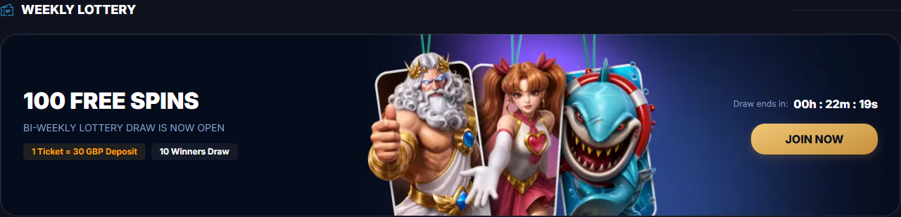
Wheel
nod 1:3580
Cele trei rânduri de statistici — Your tickets, Winners, Spin —
se randau, dar erau o constantă scrisă în PromoRow. Raportul din valul 2
spusese că datele nu au câmp pentru ele; era adevărat pe jumătate, pentru că lipsa
câmpului făcea falsă chiar afirmația din capul lui PromoBanner, aceea că tot
ce desenează design-ul stă în date. Acum stau în tournaments.json, sub
stats. Măsurate pe nodul 1:3587: rândul are 34px, nu 40 — e o
cutie de text de 22px în 6px de padding, nu interlinia proprie a lui
text-lg — distanța dintre rânduri e 9, nu 8, iar coloana lor
stă la 24 de buton, nu la 20. Subtitlul se rupe acum pe lățimea propriului titlu, ca
nodul 1:3591. Regula nu e generală: celelalte două subtitluri curg mai lat decât
titlurile lor și își păstrează lățimea maximă.


Bannerele promo pe mobil — era desktopul strivit
noduri 1:6195, 1:6247, 1:6282
La 390px toate trei randau compoziția desktop de 1280×260 strânsă în 339: butonul
JOIN NOW ieșea tăiat de marginea din dreapta, Draw ends in călca peste
artă, pastilele stăteau peste personaje, iar rândul de turneu creștea la 367px înălțime.
Figma desenează acolo altceva — nodurile 1:6195, 1:6247 și 1:6282 sunt un card de 358×220
cu îndemnul strâns într-o pastilă lângă cronometru. E acum PromoBannerMobile,
o a doua componentă și nu niște reguli mobile: peste prima:
alte cutii, alte mărimi de text, altă ordine de citire.
Patru diferențe sunt voite. Loteria își păstrează textul propriu, pentru că nodul 1:6253 repetă în cardul de loterie copy-ul turneului — SPIN CHALLENGE 2000. Ceasul arată hh:mm:ss, cele trei grupuri pe care le numără tot restul sitului, unde Figma scrie patru: 08:12:36:35. Arta e imaginea de desktop re-încadrată — Figma hrănește acele cadre cu un export mai lat al aceleiași scene, 4:1 față de 4,92:1 cât are al nostru, deci putem alege ce treime se vede, nu și cât de aproape. Iar subtitlul roții scrie everyday unde Figma are greșeala de tipar EVERY DAT.
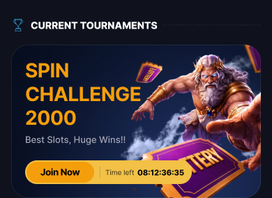

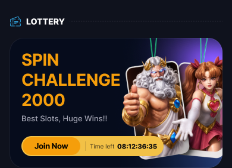

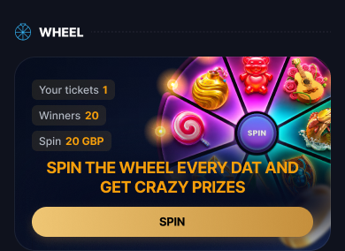

Cele șapte rânduri de jocuri
noduri 1:3230, 1:3285, 1:3364, 1:3456, 1:3485, 1:3548, 1:3635
Crash Games, Must-Play Slots, Bonus Buy, Megaways, Jackpots, Drops & Wins și Egypt au
exact structura lui Popular și se potrivesc: antet de 28px, See All (206), carduri
de 203×264, una sau două grile, așa cum le declară sections.ts. Șase titluri
din șapte se potrivesc după transformarea în majuscule.
Ce nu se potrivea erau două pictograme. drops-wins (1:3551) și
egypt (1:3638) veniseră ca exporturi de subarbore întreg și
desenau altă artă decât design-ul: o explozie de raze în loc de cercul festonat, un bust
de faraon în loc de cupola abstractă. Sunt înlocuite cu vectorii de o singură frunză,
citiți cu get_design_context — aceeași lecție ca la butonul de căutare.
Rămân două diferențe. Pictograma bonus-buy (1:3367): Figma desenează o coroană peste bannerul BONUS, noi desenăm trei stele. Nu e reparată, pentru că în Figma glifa e făcută din cincisprezece fragmente mascate, deci nu există un vector curat de exportat, iar la 20px diferența abia se distinge. Și titlul: nodul 1:3556 scrie literal drop&wins, care se randează DROP&WINS; noi scriem DROPS & WINS, engleza citibilă.


Footer
nod 1:3666Toate cele șapte logo-uri de plată și cei șapte parteneri se randează, inclusiv Deutschland Casinos, care rămăsese nedescărcat și figura ca partner-7. Cele zece steaguri de limbă sunt elemente de listă, nu linkuri — nu există rutare pentru ele, iar zece ancore care nu duc nicăieri sunt mai rele pentru tastatură decât o listă simplă.

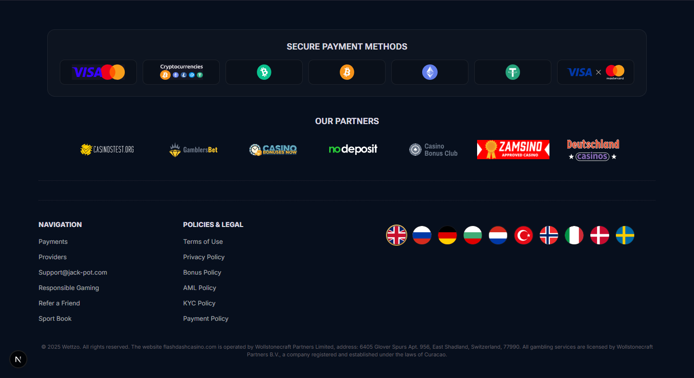
Căutarea, starea cu sugestii
nod 1:4479Conținutul era corect de la început — aceleași patru jocuri, aceiași provideri, aceleași etichete de categorie, citite din Figma, nu inventate. Ce era greșit era așezarea: panoul plutea sub header, iar bara de categorii de dedesubt arăta în același timp un al doilea câmp de căutare, închis. Acum câmpul din capsulă se lățește pe loc, primește conturul cyan și butonul de golire, iar panoul cade sub el, aliniat la dreapta.
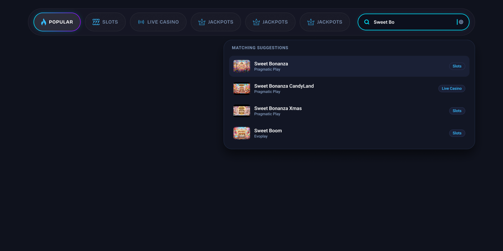

Panoul Balance
nod 1:4116
Aici a ieșit la iveală ceva ce cititul codului nu prindea: panoul nu se putea deschide
din adresă, pentru că oglinda de stare în URL, cerută în plan, nu fusese scrisă niciodată
și nici semnalată. Șase capturi pe care le marcasem „verificate" arătau de fapt pagina
implicită. Acum ?panel=balance chiar îl deschide. Stratul din spate a revenit
la 20% — la 80% pagina din spate aproape dispărea.


Hero mobil — era compoziția desktop micșorată
noduri 1:5750, 1:5751Cea mai serioasă abatere găsită. Design-ul mobil nu e o versiune mai mică a celui desktop, e altă compoziție: două pastile separate în loc de una, suma £5,500 pe rândul ei cu UP TO 250 FREE SPINS dedesubt, buton Get nu GET. Are și artă proprie — nodul 1:5751, cu fundal bleumarin în degrade, Zeus altfel încadrat și un ciob violet în colțul de jos. Prima încercare decupa imaginea de pe desktop, ceea ce punea în spate stâncile și coroana de aur de acolo și nu putea produce ciobul. Acum e imaginea reală, exportată la 3×.
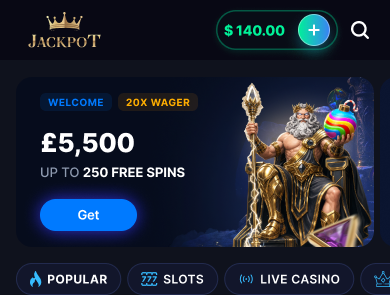
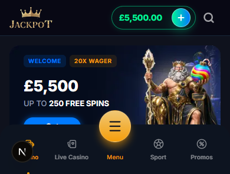
Rândul Popular — mobil
nod 1:5882Grila 3×2 era deja corectă — contradicția fusese în briefingul meu, iar agentul a semnalat-o în loc să aleagă singur. Ce se strica erau titlurile lungi: blocul de text e aliniat la baza unui card cu înălțime fixă și tăiere la margine, deci un titlu care cerea al treilea rând creștea în sus și își pierdea primul rând. Se vedea pe Golden Koi Rising și pe Frost Fangs. Acum e limitat la două rânduri, cu providerul pe unul singur.

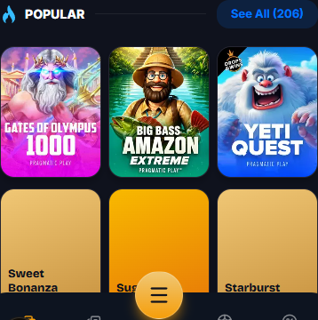
Ce s-a reparat după prima rundă de comparație
| ID | Ce era | Ce e acum |
|---|---|---|
| V-1 | Hero mobil = compoziția desktop micșorată | Compoziția nodului 1:5750 plus arta proprie 1:5751, exportată la 3× |
| V-2 | Titlurile lungi se tăiau pe cardul de 114px | Două rânduri maximum, provider pe unul singur |
| V-3 | 29 de SVG-uri cărau canvas-ul Figma | Curățate; banda de provideri se randează identic după |
| V-4 | Stările interactive necomparate | Toate zece capturate; a scos la iveală că deep-link-urile lipseau complet |
| V-5 | Overlay la 80% peste tot | 20% pe desktop, 80% sub 768px — singurul token cu două valori |
Pagina a dat 500 pe toate rutele, deși codul era corect
În timpul verificării, serverul a început să întoarcă Internal Server Error pe orice
adresă. Codul compila fără nicio eroare. Din logul serverului:
ENOENT ... _buildManifest.js.tmp.z5fzbd71okj.
Cauza: am rulat un build de producție cât serverul de dezvoltare era pornit, iar amândouă
scriu în același director .next. S-au călcat reciproc și au corupt manifestul.
Interdicția asta era scrisă în promptul fiecărui agent. A încălcat-o părintele, adică eu.
De aceea reparația nu e o notă de reamintire: next.config.ts citește acum
NEXT_DIST_DIR, iar npm run build:check trimite build-ul într-un
director separat. Verificat: build complet rulat, serverul a rămas în picioare.
Ce nu se potrivește și de ce e în regulă
- Providerii fără logo au inițiale — EV, RG, PG — unde design-ul repetă aceleași cinci logo-uri de paisprezece ori.
- Cardurile fără artă au gradiente cu titlul scris deasupra, pentru că în Figma titlul e copt în imagine și cardul nu are nod de text.
- Moneda e GBP peste tot, unde design-ul scrie pe alocuri $ sau RON — decizia ta de la început.
- Hero-ul mobil arată o singură ofertă. În Figma nodul 1:5749 e o pistă de trei carduri, dar al doilea începe la x=380 într-un cadru de 390, deci nu se vede nimic din el. Un carusel ar cere o sursă de date pentru oferte, care nu există.
Ce urmează
Demo-ul rulează. http://localhost:3000 pentru platformă,
http://localhost:3000/dev/screens pentru registrul de ecrane.
Se pot deschide stări direct: ?auth=vip, ?panel=balance.
Zece perechi comparate, toate se potrivesc acum. Verificarea vizuală a scos trei lucruri pe care cititul codului nu le prindea: butonul de căutare al providerilor arăta un fragment din canvas-ul Figma, hero-ul mobil era compoziția desktop micșorată, iar deep-link-urile de stare nu existau deloc — deci jumătate din capturile mele „verificate" arătau pagina implicită.
Dacă mai vrei ceva schimbat în plan, adnotează direct pe pagină și trimite — se actualizează aici, nu într-un document paralel.
Direcția de design a acestei pagini: sistemul de design al produsului însuși — paleta din secțiunea 03, citită din UI Kit. Nu am folosit o bibliotecă externă, tocmai ca pagina să arate ca produsul pe care îl propune.